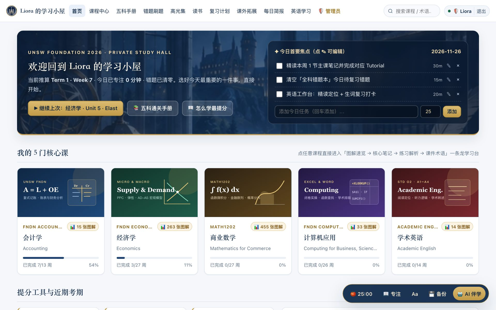
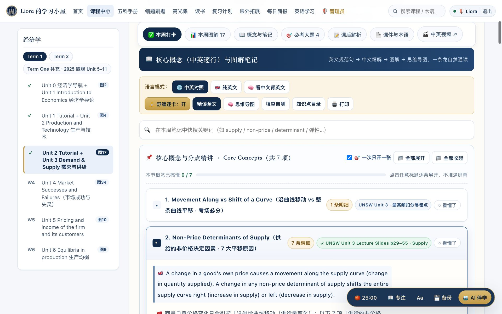
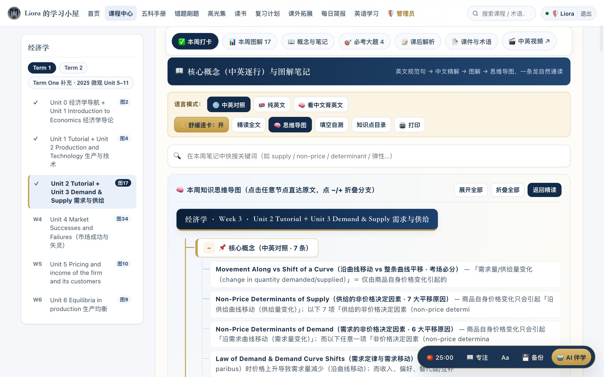
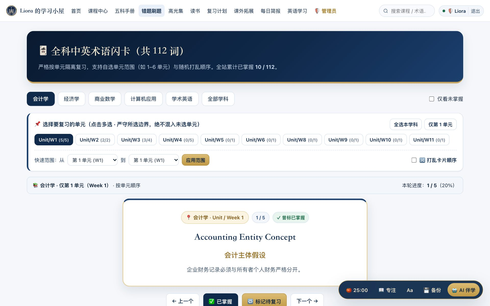
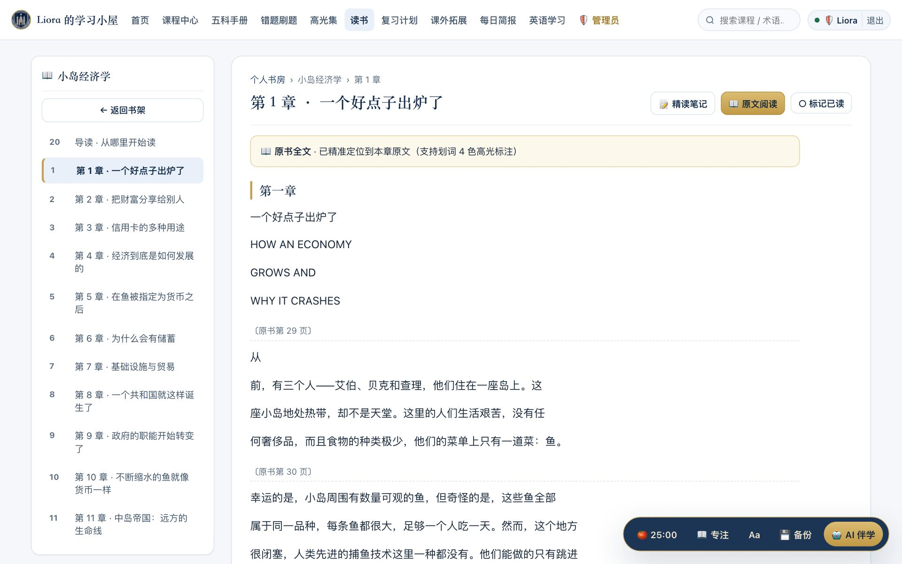
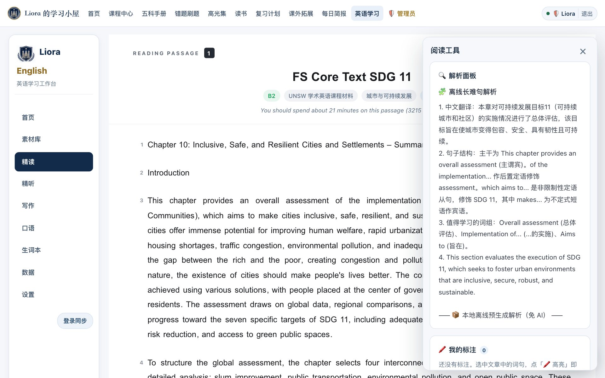

📖 Liora 的学习小屋 · 全站使用指南
全站 12 大功能模块一图看懂：账号隔离、首页任务、ADHD 舒缓逐卡阅读、中英双语切换、全站快搜、4 色荧光笔高光、分单元术语闪卡、原书原文阅读、100% 离线英语精读与 B 站视频。每章均可折叠，按需点开看（图片点开可高清放大）。
01账号注册、登录、权限与数据隔离 多账号独立云端保存
📝 新同学如何注册
打开登录页底部「去注册」或访问 /__register，只需填写用户名 + 密码提交即可（无需手机号或邮箱）。提交后需等待管理员在后台点「同意通过」即可登录。
🔒 100% 严格数据隔离
每个账号的课程打卡进度、4 色高光批注、错题本、闪卡掌握度、今日任务、番茄钟记录均按账号独立存放在云端，换电脑或手机登录自动同步，账号间完全互不可见。
🚪 退出与切换账号
桌面端直接点顶栏最右侧的 「退出」 即可切换账号；手机端可点右下角 「💾 备份」 抽屉里的「退出登录」。
02首页驾驶舱：一键续学 + 自定义今日任务 每天打开第一站

- ▶ 继续上次：自动记住你上次离开前正在学的具体课程周次或书本章节，点一下直接接上进度。
- ✦ 今日首要焦点（支持完全自定义编辑）：
- 点击任意任务文字或右侧
✎图标，可直接修改任务内容和预计分钟数，按 回车（Enter） 保存并同步云端。 - 在底部输入框输入新任务和分钟数，按回车或点 「添加」 新增（最多保留 6 条）；点
×删除，清空后不会再自动弹回默认任务。
- 点击任意任务文字或右侧
- 我的 5 门核心课：卡片显示每门课总图解数与你的实时完成百分比，点任意卡片直接进入一条龙学习台。
- 提分工具与近期考试倒计时：快捷进入五科手册、遗忘曲线错题本、术语闪卡、闭卷刷题、高光集、五科视频与个人成绩档案。
03课程学习台：ADHD 舒缓逐卡模式 + 双语切换 + 思维导图 核心提分引擎

- 顶部吸顶一条龙导航：依次排列
✅ 本周打卡（置顶在周标题正下方）→📊 本周图解→📖 概念与笔记→🎯 必考大题→📝 课后解析→📄 课件与术语→🎬 中英视频 ↗（点一下直接打开该科 B 站视频页，无需二次跳转）。 - 🧘 ADHD 舒缓逐卡阅读模式（默认开启）：
- 所有核心概念卡、详细分点（如 Supply 7 大非价格因素）、双语精讲与图解专题默认全部折叠收起，告别密集文字墙压迫感。
- 默认勾选
🎯 一次只开一张：点开第 2 张卡时，第 1 张自动收起，屏幕永远只聚焦眼前一小块内容。 - 采用 2.02 倍大行距 + 短行宽 + 柔和暖纸底色，减少串行与眼疲劳；每看懂一条概念可点
○ 看懂了，顶部进度条实时推进。 - 需要整页通读或打印时，随时可点
📂 全部展开或切换🧘 舒缓逐卡：关。
- 3 种语言模式（全段同步生效）：
- 🌐 中英对照：上行标准学术英文定义，紧跟下行中文精解（核心概念与双语笔记全段生效）。
- 🇬🇧 纯英文：隐藏中文，沉浸模拟全英考场阅读。
- 🧠 看中文背英文：英文原句转为柔和浅蓝待背卡，先看中文口头复述英文，再点卡片翻开核对。
- 4 种复习视图：精读全文 / 🧠 思维导图 / 填空自测（精准遮盖核心专业术语，英文遮英文词、中文遮中文概念，不乱遮） / 知识点目录（首屏展开一键跳转）。
- 高清图解速览 & 放大灯箱：点顶部图解标签直达对应图表，点击任意图片或曲线图可高清全屏放大查看。

04双层极速搜索：全站全文检索 + 本周页内快搜 1 秒直达考点
🔎 顶部全站搜索框
覆盖全站 1,450+ 条核心概念、非价格因素分点、双语笔记、必考大题与术语。支持中英文多词组合搜索（例如直接搜 supply non-price determinant），点选结果自动跳转到对应周次并高亮定位！
⚡ 本周页内快搜栏
在课程笔记正上方输入任意关键词（如 elasticity / 折旧 / XLOOKUP），自动展开被折叠的卡片，用亮黄色标出全部命中位置，支持 ↑ 上一处 / ↓ 下一处 逐个定位。
05全站 4 色荧光笔永久高光 & 高光集 全站任意页面通用
- 哪里都能画：在课程笔记、必考大题、五科手册、读书原书原文、每日简报、英语精读文章等全站任意页面，用鼠标或手指选中一段文字，都会自动弹出 4 色荧光笔浮条：
- 🟡 重点黄（高频必背） · 🟢 掌握绿（已理解） · 🔵 英文蓝（地道英文句） · 易错粉（易扣分陷阱） · 📝 写批注
- 跨设备永久还原：高光实时同步到你的专属云端账号，刷新网页或换设备登录后自动精准还原在原文上。
- 点击改色 / 写批注 / 擦除：点击任意已画好的高光，即可切换颜色、补充或修改批注，或一键擦除；鼠标悬停在带 📝 的高光上可直接预览批注。
- 高光总目录（顶栏「高光集」）：按颜色和学科筛选集中复习，支持一键打印，点
📍 回到原文定位 →自动跳回对应原文并闪烁高亮提醒。
06提分四大件：五科手册 · 遗忘曲线错题本 · 闭卷刷题 · 分单元闪卡 考前冲刺必备

- 📚 五科手册（顶栏「五科手册」）：集中汇总 5 门课的考核权重、核心公式卡、Excel 必考函数清单与考场高频避坑表。
- 🔁 全科错题本（顶栏「错题刷题」）：支持手动录错题、或在课程必考大题/刷题页一键收入；系统按 1 / 3 / 7 / 14 天艾宾浩斯遗忘曲线自动推回今日待复习队列。
- 🎯 多科闭卷刷题 & 会计 U1–U6 官方引文库：按学科闭卷模拟自测，交卷即看解析，错题一键入错题本。
- 🃏 新版分单元术语闪卡（共 112 词）：
- 严格按单元隔离：从某周课程点进闪卡或切换学科时，默认只选当前单个单元，绝不混入未选单元的内容。
- 自选范围 + 随机打乱：点亮任意几个单元标签，或用「快速范围：从第 1 单元到第 6 单元 → 应用范围」锁定范围，勾选
🔀 打乱卡片顺序即可在该范围内随机出题。 - 章节完成确认：背完本范围最后一张卡后会弹出完成总结卡，由你自由选择「进入下一单元 / 打乱重刷 / 只刷未掌握」。
07个人书房：3D 书架 + 每章原书原文阅读 精读笔记 & 原文一键切

- 点顶栏 「读书」 进入真实 3D 书封书架，底部可展开查看想读书单。
- 进入任意书籍的具体章节后，章节标题正旁边提供
📝 精读笔记与📖 原文阅读一键切换（不放在导读里）。 - 打开「原文阅读」会自动定位到当前章节的原书正文，超长章节自动分页流畅阅读；含中英双语版本的书（如《股票大作手回忆录》）还支持在原文页内自由切换「中文原文 / 英文原版」。
08英语学习工作台（100% 离线免 AI）· 每日简报 · 五科视频 零门槛直达

- 🇬🇧 英语学习工作台（顶栏「英语学习」）：
- 左侧包含 素材库 / 精读 / 精听 / 写作 / 口语 / 生词本 / 数据 完整闭环。
- 100% 离线查词 & 翻译 & 长难句解析：点击文中任意单词直接调用本地 9,389 词雅思词库显示音标、释义与发音并可一键加入生词本；划选整句或半句/从句点「翻译 / 长难句解析」立刻读取离线缓存与本地语法拆解，无需配置任何 AI 密钥。
- 📰 每日简报（顶栏「每日简报」）：收录近 14 天国际顶刊前沿文章精选，支持顶栏搜索、按分类筛选、按时间正倒序切换、一键展开/折叠全部，并支持 4 色荧光笔高光。
- 🎬 五科精选视频：点击任意课程页顶部的
🎬 中英视频 ↗即可直达。已全部清理国内打不开的海外死链，保留无需代理、页面内直接播放的 B 站精选课程（会计学含 B 站中英双语原声）。
09右下角全站悬浮工具条 & 管理员控制台 专注 · 备份 · 权限管理
🍅 专注番茄钟
可选 15 / 25 / 45 分钟并填写本轮目标，倒计时结束后自动累计进首页的「今日已专注时长」。
📖 专注模式 & Aa 字号
点「专注」一键隐藏左侧边栏专心读正文；点「Aa」可在紧凑 / 标准 / 舒适大字三档间循环切换并记住偏好。
💾 个人数据备份
一键导出你的全站进度、4 色高光、错题本、闪卡与成绩为 .json 文件，随时可无损恢复。
🛡️ 管理员控制台（仅管理员可见）
管理员登录后顶栏出现「🛡️ 管理员」：可审批新注册账号、实时查看每位学员的学习进度与高光数、逐人开关「课外拓展」等模块权限、重置密码、停用或删除账号。